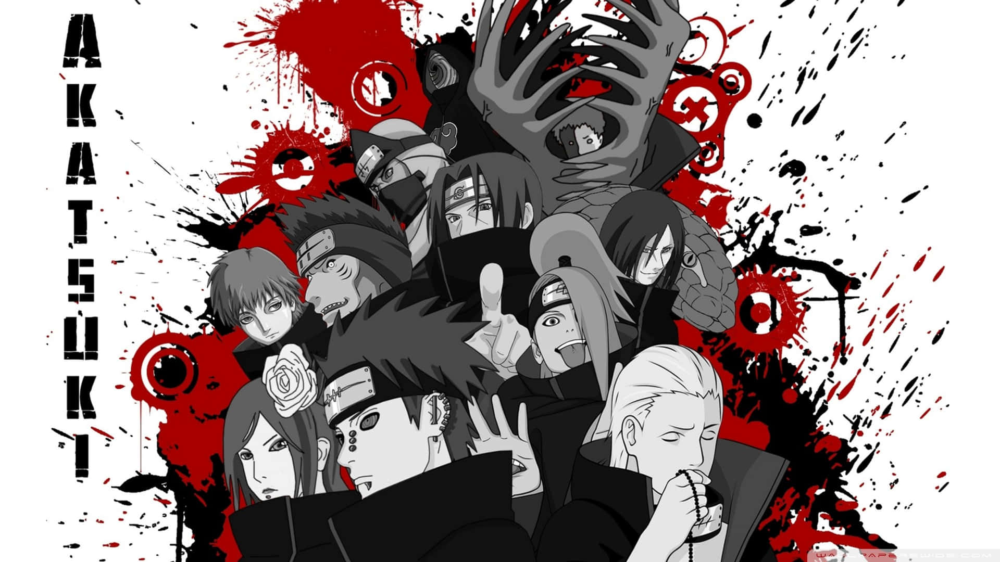

AKATSUKI
Jiraiya SenseiJiraiya is a ninja from the village of Konohagakure trained by Hiruzen Sarutobi, the Third Hokage. He becomes known as the "Toad Sage" and also "Pervy Sage" due to his training under the Great Toad Sage in the field of Senjutsu (仙術, lit. "sage techniques"), enabling him to summon toads as allies during battles.
About Broken Heroes
Akatsuki (暁; ; Literally meaning "Dawn" or "Daybreak"; ) was initially an organisation created by Yahiko and his two comrades Konan and Nagato in an effort to fight against the tyranny and oppression that their home village Amegakure was facing during the Third Great Shinobi War, and the long-term goal of world peace. After Yahiko's death and under the influence of Obito Uchiha, Akatsuki became a criminal organisation comprised of S-rank missing-nin and is the most wanted group in all of the shinobi world. Their main goal is to collect all of the tailed beasts for their plan of world domination. As such, Akatsuki, despite initially having a minor role during Part I, has become the primary antagonistic force in Part II.
Akatsuki at any given time is composed of no more than ten primary members, all of whom were S-rank criminals of their own respective villages — with the exception of Nagato and Konan. Members always work in teams of two with the exception of Zetsu, who functions as the organisation's spy, and make use of their unique skills to the team's advantage. Team members must function very well, or at least well enough to accomplish their tasks, even though some may have mutual problems with each other. The organisation is rarely fully assembled, as seen in the end of Part I, when one member said it was the first time in seven years when they were all together.
The organisation is widespread, spanning several countries with agents in various places. When one team finds a tailed beast and has to begin the job of sealing the beast, they have hidden hideouts with many traps ready, to do the three-day long technique.